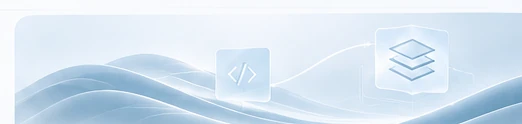
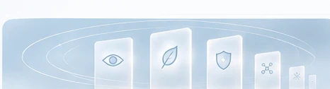

01
Le point de départ
Une carte de visite interactive. Trois questions, des réponses personnalisées. Rien qui exigeât, au départ, d’inventer une architecture.
Aux origines de KENTA
L’histoire d’une quête de liberté, de cohérence et de simplicité.
Une carte de visite interactive. Trois questions, des réponses personnalisées. Rien qui exigeât, au départ, d’inventer une architecture.

Un ordinateur de 2012, peu de moyens et aucune formation au code. L’objectif : des fonctions accessibles, non prisonnières d’enchaînements arbitraires.
L’indentation, les dépendances et les réponses plausibles des IA ont imposé une règle : une proposition n’est jamais une preuve.
KENTA, 健太. Un compagnon, une idée de solidité et de croissance.

Un gardien est une identité déclarée qui sait à quoi elle résonne. Les modèles de langage prêtent leur voix à KENTA. Les gardiens portent la décision.
Une construction locale, gouvernée et évolutive. Ses expériences nourrissent une mémoire ; ses limites doivent rester visibles.
Les bibliothèques portent les fonctions ; les déclarations expriment ce qu’elles peuvent accomplir et sous quelles conditions. Ce choix est né du besoin, pas d’une théorie préalable.
Comprendre l’architecture →Un jardin secret
Le désir de confidentialité ne suppose rien à cacher. Il exprime le droit d’habiter un espace numérique dont on maîtrise les règles, les entrées et les traces. KENTA a grandi à cette frontière entre liberté et responsabilité.
Les noms des gardiens empruntent à Naruto et à l’imaginaire du créateur. Ils racontent l’histoire du projet. Les rôles de chacun sont décrits dans son ADN.